- The geodetic latitude of the site.
- The geodetic latitude of the site.
 - The geodetic longitude of the site.
- The geodetic longitude of the site.
- The geodetic latitude of the site.
- The geodetic longitude of the site.
slaGeoc() function. When passed the
geodetic latitude and height above sea-level, this returns the radial
distance from the rotation axis, Rr, and the distance
from the equatorial plane, denoted by z. The distance
from the center of the Earth is then given by

slaGeoc(). If this ever becomes an issue, the altitude
will have to be determined more accurately, perhaps by adjusting it
interactively to produce stationary fringes while tracking the limb of
the moon. For other, more distant sources, the accuracy of the GPS
altitude should be more than sufficient.
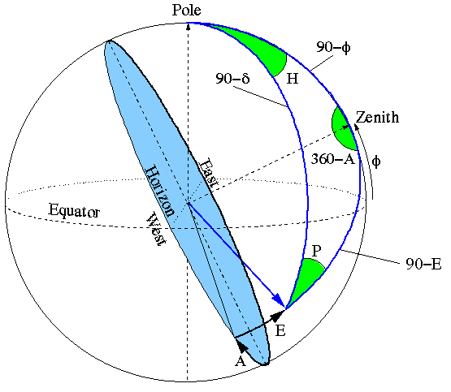
The symbols shown in this diagram are used throughout this document. They are defined as:
 - Geocentric apparent Right Ascension.
- Geocentric apparent Right Ascension.
 - Geocentric apparent Declination.
- Geodetic lattitude.
- Geocentric apparent Declination.
- Geodetic lattitude.
 -).
- Local apparent sidereal time (radians).
-).
- Local apparent sidereal time (radians).
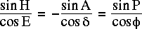
Similarly the cosine formula of spherical trigonometery yields:

and the analogue to the cosine formula yields:
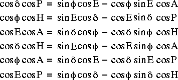
The above equations can be combined to find the horizon coordinates that correspond to given equatorial coordinates. The resulting equations are:
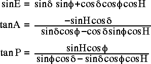
For the SPT we also need to know the rates at which A,E
and P evolve per second of UT. For a sidereal source this is
determined solely by the rotation of the earth, so the rates are
related to the steady increase in the hour angle of the source. The
rates due to precession are insignificant. For a nearby source an
additional contribution comes from the apparent proper motion of the
source. This appears as a steady change in and
. For the computation of tracking rates the proper
motion terms can be ignored for all standard astronomical sources
except the moon. However it is possible that ephemerides could be used
to specify unusual tracks, such as raster scans of the sky, so in the
SPT, the proper motions of all sources that are implemented as
ephemerides will be incorporated into the tracking rates. The proper
motions of non-ephemeris objects will be ignored.
The tracking rates can be found by differentiating the above equations wrt hour angle, then multiplying the results by the sidereal rate.
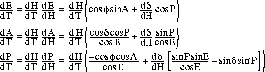
where  and
and  represent the proper motion of the source (if any),
and:
represent the proper motion of the source (if any),
and:
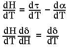
Note that d/dT is the ratio of the
rotational period of the Earth to the length of the UT1 day. According
to the explanatory supplement of the Astronomical Almanac, when the
ratio of mean sidereal time to UT1, 1.002737909350795, is combined
with the precession rate of right ascension, the rotation rate of the
Earth is reasonably aproximated as 1.002737811906 rotations per
UT1-day. In order to compute tracking rates in radians per UT1 second,
the appropriate value for d/dT is thus.
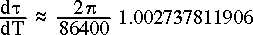
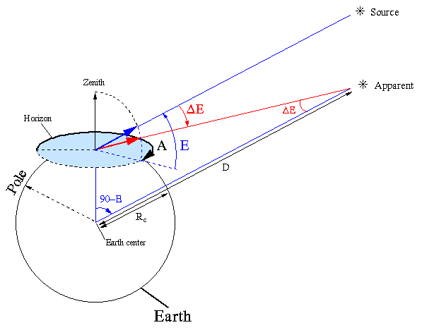
Application of the sine rule to the above triangle reveals,
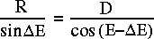
Solving this for the angle of parallax results in,
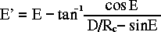
This correction will be applied to solar system objects only.
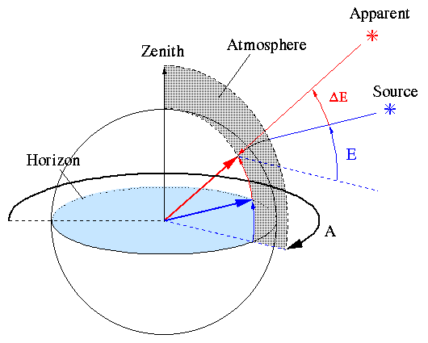
The SPT weather station will provide real-time measurements of the
local temperature and relative humidity. This will be used to estimate
conditions in the higher parts of the atmosphere and thus derive an
estimate of the elevation offset due to refraction. Rather than
devising an empirical model of the atmosphere, the SPT will, at least
initially, adopt the Starlink slaRefro() function in
Patrick Wallace's slalib library. This was originally developed with
optical pointing in mind, but it was subsequently retrofitted for
radio wavelengths. It remains to be seen whether this will be adequate
for the SPT. If not, an empirical model will have to be
devised. Unfortunately the conditions in Pasadena are radically
different from those on Chajnantor, so initial testing at Caltech
won't necessarily resolve this issue.
Given information about local atmospheric conditions
slaRefro() returns two coefficients, A and
B. These relate the vacuum elevation to the observed
refraction via the following equation.

We need an equation that goes the other way, from the vacuum elevation to the observed elevation. Unfortunately the above equation is transcendental, so in Starlink User Note 67, Pat Wallace suggests the following approximation.

This can be expanded to

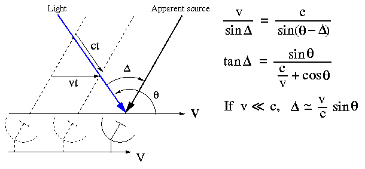
Because of this effect, the rotational velocity of the surface of the earth results in a small diurnal shift in the apparent positions of sources. The maximum aberration at the latitude of the SPT is about 0.3 arcseconds. Note that the much larger effect caused by the motion of the Earth around the Sun is assumed to have been taken care of during the precession calculations used to find the apparent Right Ascension and Declination of the source.
The tangential rotational velocity at the surface of the Earth is given by,

Where Rr was defined earlier to be the radial distance of the SPT from the center of the Earth, and 86400 is the number of seconds in a day.
To determine the adjusted azimuth and elevation, the following diagram shows a unit vector pointing at the source from the center of the celestial sphere, overlaid with a rectangular coordinate system that is aligned with the compass points and the zenith. A second unit vector illustrates the effect of diurnal aberration, and the accompanying equations show how to calculate its direction.
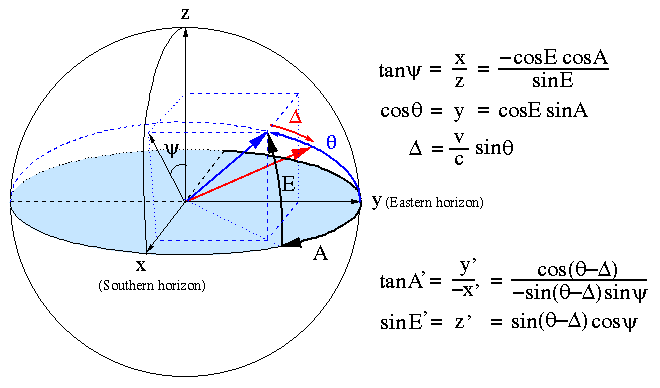

Nonetheless, there will be some flexure in the mount itself and in the azimuth bearing. This should be a function of elevation. Traditionally one assumes that flexure is proportional to the torque applied by gravity to a hypothetical telescope tube. This can be corrected using

where kf is an empirical constant to be fitted for. It remains to be seen whether this will be appropriate or necessary for the SPT.


Now adjust the hour angle and latitude to account for the tilt in the azimuth axis.


 90 degrees. In
practice there will be a small angle between this axis and the actual
elevation axis. The component of the tilt that lies within the plane
of the azimuth is indistinguishable from an azimuth encoder offset,
and is dealt with later. The remaining component of the tilt manifests
as a rotation about the radial azimuth vector, and will be denoted by
the clockwise angle
90 degrees. In
practice there will be a small angle between this axis and the actual
elevation axis. The component of the tilt that lies within the plane
of the azimuth is indistinguishable from an azimuth encoder offset,
and is dealt with later. The remaining component of the tilt manifests
as a rotation about the radial azimuth vector, and will be denoted by
the clockwise angle  E, as seen from
azimuth bearing. In the following diagram E' and A' are the azimuth
and elevation that, when modified by the elevation-axis tilt, result
in the requested azimuth and elevation.
E, as seen from
azimuth bearing. In the following diagram E' and A' are the azimuth
and elevation that, when modified by the elevation-axis tilt, result
in the requested azimuth and elevation.
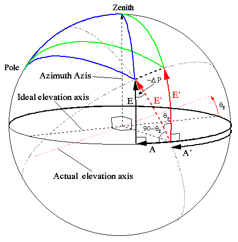
By applying, the spherical trigonometry sine, analogue to the cosine, and a variant of the cosine formula to the bottom left triangle, one obtains the following equations.
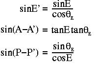
The SPT will need two separate collimation models.
The position angle of the deck will be denoted by  .
This increases as the deck rotates clockwise around the direction of
the elevation vector and is here defined to point in the direction of
increasing elevation when is zero. While tracking
a source, the position angle of the deck will be rotated to keep the
field of view from rotating. The deck angle will thus be given by,
.
This increases as the deck rotates clockwise around the direction of
the elevation vector and is here defined to point in the direction of
increasing elevation when is zero. While tracking
a source, the position angle of the deck will be rotated to keep the
field of view from rotating. The deck angle will thus be given by,
= o + P.
o is a user selected deck-angle
offset and P is the corrected parallactic angle of the source. The
collimation tilt will be defined by a position angle offset,  c, and a magnitude c. The following diagram indicates the
azimuth and elevation adjustments required to point at a source at the
target azimuth and elevation.
c, and a magnitude c. The following diagram indicates the
azimuth and elevation adjustments required to point at a source at the
target azimuth and elevation.

The equations that relate the adjusted azimuth and elevation to the target elevation and azimuth are given by applying, respectively, the sine and cosine spherical trigonometry formulae to the green triangle.

Note that exploiting small-angle expectations to approximate
cos2c to 1, and sin2c to 0 or c2,
could result in significant errors, particularly near the zenith. For
example, if + =90o,
E=80o and c=0.1o, then the
returned elevation will be wrong by almost 2 seconds of arc.
=90o,
E=80o and c=0.1o, then the
returned elevation will be wrong by almost 2 seconds of arc.
Also note that the apparent parallactic angle is not effected by collimation errors.

Note that terms involving have been replaced
by equations involving sin and cos of the
corrected A,E and P.
It remains to convert the positions and rates to encoder units. This involves multiplying by a fixed conversion factor and adding measured encoder offsets.
| kf | The constant of flexure (degree per cosine of elevation). |
 HA HA |
The tilt of the azimuth axis in the direction of increasing hour angle. |
| A |
The tilt of the azimuth axis in the direction of increasing latitude. |
| E |
The tilt of the elevation axis perpendicular to the azimuth
ring, measured clockwise around the direction of the azimuth
vector. It makes sense to cache the values of
sinE and
cosE.
|
| c |
The magnitude of the collimation error. It makes sense to
cache the values of sinc and
cosc.
|
| c |
The deck angle at which the collimation error is directed radially outward. |
| Eo | The elevation encoder count at zero elevation. |
| Ao | The azimuth encoder count at zero azimuth. |
| Po | The deck encoder count that aligns the reference edge of the triangular platform to be horizontal. The reference edge should be chosen such that Po is close to zero. |
The following diagram illustrates the relationship between the X,Y offsets and the resulting azimuth and elevation corrections.

The corresponding equations are:

Note that since the offset depends on the azimuth and elevation of the pointing center, which changes as the source moves across the sky, this offset has to be recomputed every servo cycle.